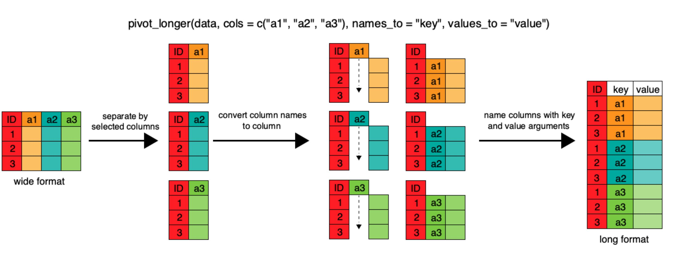

join functions to join two dataframes togetherpivot_wider and pivot_longer commands from the
tidyr package.When working with your data, you may want to create a new variable in a data frame, but only if certain conditions are true. Conditional statements are a series of logical conditions that can help you manipulate your data to create new variables.
We’ll begin again with the international environmental agreements data from last week (see the codebook for what each column means), and remember to load in the tidyverse
library(tidyverse)
agreements <- read_csv("https://ucd-rdavis.github.io/R-DAVIS/data/iea_agreements.csv")The general logic of conditional statements is this: if a statement is true, then execute x, if it is false, then execute y. For example, let’s say that we want to create a categorical variable for the size of each agreement. Using the summary function below, we see that the mean number of members is 20.33, so let’s split the data at the mean using a conditional statement.
summary(agreements$n_members)## Min. 1st Qu. Median Mean 3rd Qu. Max. NAs
## 1.00 2.00 2.00 20.33 9.00 200.00 1556Notice how different the mean (20.33) and the median (2) are. Most agreements are bilateral, with exactly two members, while a few global treaties have nearly 200. Keep that in mind; we’ll come back to it in the lab.
To do this, we define the logic: if the number of members is less
than the mean of 20.33, assign “small” to this new variable, otherwise,
assign “big” to this new variable. We can call this
size_cat to specify the categorical variable. We will first
do this using the ifelse() function, where the first
argument is a TRUE/FALSE statement, the second argument is the new
variable if the statement is true, and the third argument is the new
variable if the statement is false.
agreements$size_cat <- ifelse(agreements$n_members < 20.33, "small", "big")
head(agreements$size_cat)## [1] "small" "small" NA "small" "small" NAThe tidyverse provides a way to integrate conditional statements by
combining mutate() with the conditional function:
case_when(). This function uses a series of two-sided
formulas where the left-hand side describes the condition, and the right
supplies the result. The final condition should always be TRUE, meaning
that when the previous conditions have not been met, assign the last
value. Using this function we can re-write the size_cat
variable using the tidyverse.
A note: Always be cautious about what might be left out when naming
the conditions. In the previous ifelse() example we saw
that NAs in the data remained NAs in the new variable construction.
However, this is not so when using case_when(). Instead,
this function takes the last argument to mean “anything that is left”
rather than n_members > 20.33 == F. So when we run the equivalent
conditions in this function, it assigns “small” where
n_members is NA.
agreements %>%
mutate(size_cat = case_when(
n_members > 20.33 ~ "big",
TRUE ~ "small"
)) %>%
select(n_members, size_cat) %>%
head()## # A tibble: 6 × 2
## n_members size_cat
## <dbl> <chr>
## 1 2 small
## 2 2 small
## 3 NA small
## 4 2 small
## 5 2 small
## 6 NA smallTo adjust for this, we need to add in more than one condition:
agreements %>%
mutate(size_cat = case_when(
n_members > 20.33 ~ "big",
is.na(n_members) ~ NA_character_,
TRUE ~ "small"
)) %>%
select(n_members, size_cat) %>%
head()## # A tibble: 6 × 2
## n_members size_cat
## <dbl> <chr>
## 1 2 small
## 2 2 small
## 3 NA <NA>
## 4 2 small
## 5 2 small
## 6 NA <NA>Using the agreements data frame, create a new variable
called era that sorts agreements into three groups by the
year they were signed, using two landmark UN environment conferences as
dividing lines:
Use your function of choice: ifelse() or
case_when(). Be careful: 130 agreements have no
year_signed, and their era should stay
NA. Then use count() to see how many
agreements fall in each era.
agreements$era <- ifelse(agreements$year_signed < 1972, "early",
ifelse(agreements$year_signed >= 1972 &
agreements$year_signed < 1992, "middle",
"recent"))
agreements %>%
mutate(
era = case_when(
year_signed < 1972 ~ "early",
year_signed >= 1972 & year_signed < 1992 ~ "middle",
year_signed >= 1992 ~ "recent")) %>%
count(era)## # A tibble: 4 × 2
## era n
## <chr> <int>
## 1 early 885
## 2 middle 1185
## 3 recent 2816
## 4 <NA> 130case_when() version doesn’t end with
TRUE ~. Any row that doesn’t match a condition gets
NA, which is what we want here.
Often when working with real data, data might be separated in
multiple .csvs. The join family of dplyr functions can
accomplish the task of uniting disparate data frames together rather
easily. There are many kind of join functions that dplyr
offers, and today we are going to cover the most commonly used function
left_join.
To learn more about the join family of functions, check
out this useful
link.
The IEA data come as three tables, because they describe three different things: agreements, countries, and which countries belong to which agreements. Let’s read in the other two.
memberships <- read_csv("https://ucd-rdavis.github.io/R-DAVIS/data/iea_memberships.csv")
countries <- read_csv("https://ucd-rdavis.github.io/R-DAVIS/data/iea_countries.csv")The join functions join dataframes together based on
shared columns between the two data frames. Let’s see what these data
frames look like.
str(memberships)## spc_tbl_ [75,791 × 5] (S3: spec_tbl_df/tbl_df/tbl/data.frame)
## $ iea_id : num [1:75791] 1 1 2 2 3 3 4 4 5 5 ...
## $ country : chr [1:75791] "Austria" "Germany (Bavaria)" "France" "Spain" ...
## $ year_country_signed: num [1:75791] 1858 1858 1859 1859 1863 ...
## $ year_joined : num [1:75791] 1859 1859 1860 1860 NA ...
## $ year_left : num [1:75791] NA NA NA NA NA NA NA NA NA NA ...
## - attr(*, "spec")=
## .. cols(
## .. iea_id = col_double(),
## .. country = col_character(),
## .. year_country_signed = col_double(),
## .. year_joined = col_double(),
## .. year_left = col_double()
## .. )
## - attr(*, "problems")=<pointer: 0x9cf31c2b0>str(countries)## spc_tbl_ [202 × 9] (S3: spec_tbl_df/tbl_df/tbl/data.frame)
## $ country : chr [1:202] "Afghanistan" "Albania" "Algeria" "Andorra" ...
## $ iso3 : chr [1:202] "AFG" "ALB" "DZA" "AND" ...
## $ continent : chr [1:202] "Asia" "Europe" "Africa" "Europe" ...
## $ subregion : chr [1:202] "Southern Asia" "Southern Europe" "Northern Africa" "Southern Europe" ...
## $ oecd_joined : num [1:202] NA NA NA NA NA ...
## $ eu_joined : num [1:202] NA NA NA NA NA NA NA NA NA NA ...
## $ population : num [1:202] 39068979 2528480 44042091 77380 33451132 ...
## $ gdp_per_capita : num [1:202] 528 4981 4364 34537 2847 ...
## $ democracy_index: num [1:202] 0.167 0.442 0.152 NA 0.16 NA 0.634 0.576 NA 0.79 ...
## - attr(*, "spec")=
## .. cols(
## .. country = col_character(),
## .. iso3 = col_character(),
## .. continent = col_character(),
## .. subregion = col_character(),
## .. oecd_joined = col_double(),
## .. eu_joined = col_double(),
## .. population = col_double(),
## .. gdp_per_capita = col_double(),
## .. democracy_index = col_double()
## .. )
## - attr(*, "problems")=<pointer: 0x9cf31c2a0>memberships has 75,791 rows, one for each country’s
participation in an agreement, with the years it signed, joined, and
(rarely) left. countries has 202 rows, one per country,
with its continent, its OECD and EU membership, and its 2020 population,
GDP per capita, and democracy score. Luckily, both data frames have the
column country. We can use this shared column to
join the two data frames together.
The basic structure of a join looks like this:
join_type(TableA, TableB, by=columnTojoinBy)
inner_join will return all the rows from Table A
that has matching values in Table B, and all the columns from
both Table A and B
left_join returns all the rows from Table A with all
the columns from both A and B. Rows in Table A that have no match in
Table B will return NAs
right_join returns all the rows from Table B and all
the columns from table A and B. Rows in Table B that have no match in
Table A will return NAs.
full_join returns all the rows and all the columns
from Table A and Table B. Where there are no matching values, returns NA
for the one that is missing.
For our data we are going to use a left_join. We want
all the rows from the memberships data frame, and we want
all the columns from both data frames to be in our new data frame.
memberships_joined <- left_join(memberships, countries, by = "country")If we don’t include the by = argument, the default is to
join by all the variables with common names across the two data frames.
Let’s take a look at our new memberships_joined data
frame:
str(memberships_joined)## spc_tbl_ [75,791 × 13] (S3: spec_tbl_df/tbl_df/tbl/data.frame)
## $ iea_id : num [1:75791] 1 1 2 2 3 3 4 4 5 5 ...
## $ country : chr [1:75791] "Austria" "Germany (Bavaria)" "France" "Spain" ...
## $ year_country_signed: num [1:75791] 1858 1858 1859 1859 1863 ...
## $ year_joined : num [1:75791] 1859 1859 1860 1860 NA ...
## $ year_left : num [1:75791] NA NA NA NA NA NA NA NA NA NA ...
## $ iso3 : chr [1:75791] "AUT" NA "FRA" "ESP" ...
## $ continent : chr [1:75791] "Europe" NA "Europe" "Europe" ...
## $ subregion : chr [1:75791] "Western Europe" NA "Western Europe" "Southern Europe" ...
## $ oecd_joined : num [1:75791] 1961 NA 1961 1961 1961 ...
## $ eu_joined : num [1:75791] 1995 NA 1952 1986 1952 ...
## $ population : num [1:75791] 8916864 NA 67601110 47359424 11538604 ...
## $ gdp_per_capita : num [1:75791] 43429 NA 35709 25077 40769 ...
## $ democracy_index : num [1:75791] 0.786 NA 0.789 0.786 0.826 0.813 0.789 0.8 NA 0.856 ...
## - attr(*, "spec")=
## .. cols(
## .. iea_id = col_double(),
## .. country = col_character(),
## .. year_country_signed = col_double(),
## .. year_joined = col_double(),
## .. year_left = col_double()
## .. )
## - attr(*, "problems")=<pointer: 0x9cf31c2b0>We now have a new data frame called memberships_joined
which has all of the information from our original
memberships data frame, plus the country information
(continent, population, and so on) for each row. Each country’s
information gets repeated on every one of its membership rows.
Does every row in memberships have a match in
countries? Let’s try an inner_join, which
keeps only the rows that match:
memberships_inner <- inner_join(memberships, countries, by = "country")
nrow(memberships_joined)## [1] 75791nrow(memberships_inner)## [1] 74425The inner join lost 1,366 rows. To see which ones,
anti_join() returns the rows of Table A that have
no match in Table B:
anti_join(memberships, countries, by = "country") %>%
count(country, sort = TRUE)## # A tibble: 96 × 2
## country n
## <chr> <int>
## 1 European Union 830
## 2 Germany, Former GDR 58
## 3 Palestine, Occupied Territories 47
## 4 Germany (pre-1949) 35
## 5 Ukraine (Soviet period) 23
## 6 Yemen, Arab Republic 22
## 7 Germany (Baden) 21
## 8 Belarus (Soviet period) 19
## 9 Austria-Hungary 16
## 10 Prussia 14
## # ℹ 86 more rowsNot every party to an environmental agreement is a present-day
country. The European Union signs treaties as a bloc, and older
agreements were signed by countries that no longer exist, like East
Germany, Prussia, and Yugoslavia. In memberships_joined
those rows have NA for every column that came from
countries. Neither join is “right”: it depends on whether
you want to keep those parties in your analysis.
We can join memberships to agreements in
the same way, using the column they share, iea_id:
memberships_agreements <- left_join(memberships, agreements, by = "iea_id")countries so that only countries in Oceania
remain, and call this countries_oceania.memberships data to
countries_oceania (i.e. left join with
countries_oceania on the left). Name it
oceania_left. How many rows are there?countries_oceania to the memberships
data (i.e. right join with countries_oceania on the left).
Name it oceania_right. How many rows are there? Why does
continent have so many NAs?# 1.
countries_oceania <- countries %>%
filter(continent == "Oceania") # 16 countries
# 2.
oceania_left <- left_join(countries_oceania, memberships, by = "country")
nrow(oceania_left) # one row per Oceania country per agreement## [1] 4997# 3.
oceania_right <- right_join(countries_oceania, memberships, by = "country")
nrow(oceania_right) # every row of memberships; non-Oceania rows get NA for the countries columns## [1] 75791In the spreadsheet lesson we discussed how to structure our data leading to the four rules defining a tidy dataset:
The IEA data are a good example of the fourth rule: agreements, countries, and memberships are different units, so each gets its own table, and we just saw how to join them back together when we need to.
In agreements, each row contains the values of variables
associated with one agreement, like its subject or the year it was
signed. What if instead of comparing agreements, we wanted to compare
how many agreements were signed on each subject in each decade?
We’d need to create a new table where each row (the unit) is comprised of values of variables associated with each subject. In practical terms this means the values of the decades would become the names of column variables and the cells would contain the number of agreements signed in that decade.
Having created a new table, it is therefore straightforward to see how attention to different environmental issues has changed over time. The key point here is that we are still following a tidy data structure, but we have reshaped the data according to the observations of interest: agreements per subject per decade instead of one row per agreement.
The opposite transformation would be to transform column names into values of a variable.
We can do both these of transformations with two new
tidyr functions, pivot_longer() and
pivot_wider().
pivot_widerpivot_wider() widens data by increasing the
number of columns and decreasing the number of rows. It takes
three main arguments:
names_from the name of the column you’d like to spread
outvalues_from the data you want to fill all your new
columns withLet’s try an example using our agreements data. How many agreements on each subject were signed in each decade since 1950? How would we create a dataframe that would tell us that information?
First, we need to count the agreements for each subject in each decade:
agreements_decade <- agreements %>%
filter(year_signed >= 1950) %>%
mutate(decade = floor(year_signed / 10) * 10) %>%
count(subject, decade)
str(agreements_decade) #let's take a look at the data## tibble [82 × 3] (S3: tbl_df/tbl/data.frame)
## $ subject: chr [1:82] "Agriculture" "Agriculture" "Agriculture" "Agriculture" ...
## $ decade : num [1:82] 1950 1960 1970 1980 1990 2000 2010 2020 1950 1960 ...
## $ n : int [1:82] 35 46 71 41 191 129 49 10 20 30 ...(floor() rounds down, so
floor(1987 / 10) * 10 is 1980.) In
agreements_decade there are 82 rows and 3 columns. Using
pivot_wider we are going to increase the number of
columns and decrease the number of rows. We want each row to
signify a single subject, with the number of agreements listed for each
decade. How many rows do we want our final data frame to have?
unique(agreements_decade$subject) #lists every unique subject in agreements_decade## [1] "Agriculture"
## [2] "Conservation of species and biodiversity"
## [3] "Energy"
## [4] "Fish and fisheries"
## [5] "Freshwater"
## [6] "General environmental cooperation"
## [7] "Habitat and ocean"
## [8] "Others"
## [9] "Pollution"
## [10] "Trade & environment"
## [11] "Weapons and the environment"n_distinct(agreements_decade$subject) #another way to look at the number of distinct subjects## [1] 11There are 11 unique subjects, so we want to create a data frame with just 11 rows. How many columns would we want? Since we want each column to be a distinct decade, our number of columns should equal our number of decades.
n_distinct(agreements_decade$decade)## [1] 8Alright, so we want a data frame with 11 rows and 8 columns for each
of the decades (plus one more column for the subject).
pivot_wider can do the job!
agreements_wide <- agreements_decade %>%
pivot_wider(names_from = "decade", values_from = "n")
agreements_wide## # A tibble: 11 × 9
## subject `1950` `1960` `1970` `1980` `1990` `2000` `2010` `2020`
## <chr> <int> <int> <int> <int> <int> <int> <int> <int>
## 1 Agriculture 35 46 71 41 191 129 49 10
## 2 Conservation of spec… 20 30 66 43 77 112 81 10
## 3 Energy 26 56 59 39 116 155 142 13
## 4 Fish and fisheries 43 83 244 178 273 133 89 26
## 5 Freshwater 47 51 53 49 102 75 53 6
## 6 General environmenta… 2 1 19 21 193 143 58 5
## 7 Habitat and ocean 9 6 21 46 63 54 33 2
## 8 Others 1 2 6 4 16 12 4 3
## 9 Pollution 4 13 53 68 135 142 129 46
## 10 Trade & environment NA NA NA NA 5 24 52 10
## 11 Weapons and the envi… NA 4 3 4 14 4 2 NAReading across a row shows the history of one issue. Pollution
agreements took off in the 1990s and have kept coming, and
trade-and-environment agreements first appear in the 1990s. Notice the
NAs, too: no trade-and-environment agreements were signed
in the 1950s–1980s, so count() never made a row for those
combinations, and pivot_wider has nothing to put in those
cells. Here the honest value is 0, and you could fill it in with
pivot_wider(..., values_fill = 0). Think about whether a
missing combination means “zero” or “unknown” before you fill it.
pivot_longerpivot_longer lengthens data by increasing the
number of rows and decreasing the number of columns. This
function takes 4 main arguments:
cols, the column(s) to be pivoted (or to ignore)names_to the name of the new column you’ll create to
put the column names invalues_to the name of the new column to put the column
values in
Let’s pretend that we got sent the dataset we just created
(agreements_wide) and we want to reshape it to be in a long
format. We can easily do that using pivot_longer
#cols = columns to be pivoted. Here we want to pivot all the decade columns, but not the "subject" column
#names_to = the name of the new column we created from the `cols` argument
#values_to = the name of the new column we will put our values in
agreements_long <- agreements_wide %>%
pivot_longer(cols = -subject, names_to = "decade", values_to = "n")This data set should look just like agreements_decade.
But this one is 88 rows, and agreements_decade is 82 rows.
What’s going on?
View(agreements_long)Looks like all the NAs are included in this data set. This is always
going to happen when moving between pivot_longer and
pivot_wider, but is actually a useful way to balance out a
dataset so every subject has a row for every decade. Luckily, we already
know how to remove the NAs if we want!
agreements_long <- agreements_long %>%
filter(!is.na(n)) #now 82 rowsOne more difference: decade is now a character column,
because it came from column names.
mutate(decade = as.numeric(decade)) would turn it back into
a number.
pivot_wider and pivot_longer are both new
additions to the tidyverse which means there are some cool
new blog posts detailing all their abilities. If you’d like to read more
about this group of functions, check out these links:
pivot_wider to make a table with
continent as rows, decades (from 1950 on) as columns, and
the number of different countries that joined at least one agreement in
that decade as the values. You will need to join
memberships to countries first, then summarize
before reshaping, and use the function n_distinct() to get
the number of unique countries within a particular chunk of data.countries data set has three measurement columns:
population, gdp_per_capita, and
democracy_index. This makes it difficult to do things like
compute the same summary of every measurement for each continent. Let’s
walk through a common solution for this type of problem. First, use
pivot_longer() to create a dataset where we have a new
column called measurement and a value column
that takes on the value of either population,
gdp_per_capita, or democracy_index.
Hint: You’ll need to specify which columns are being selected
to make longer. Then with this new data set, calculate the average of
each measurement for each continent. Then use
pivot_wider() to get them into a data set with a column for
each measurement. Hint: You only need to specify the
names_from = and values_from = columns## Answer 1
q1 <- memberships %>%
filter(year_joined >= 1950) %>%
inner_join(countries, by = "country") %>%
mutate(decade = floor(year_joined / 10) * 10) %>%
group_by(continent, decade) %>%
summarize(n_countries = n_distinct(country)) %>%
pivot_wider(names_from = "decade", values_from = "n_countries")## `summarise()` has regrouped the output.
## ℹ Summaries were computed grouped by continent and decade.
## ℹ Output is grouped by continent.
## ℹ Use `summarise(.groups = "drop_last")` to silence this message.
## ℹ Use `summarise(.by = c(continent, decade))` for per-operation grouping
## (`?dplyr::dplyr_by`) instead.q1## # A tibble: 8 × 9
## # Groups: continent [8]
## continent `1950` `1960` `1970` `1980` `1990` `2000` `2010` `2020`
## <chr> <int> <int> <int> <int> <int> <int> <int> <int>
## 1 Africa 9 41 49 51 53 53 54 54
## 2 Asia 22 29 37 37 46 48 48 48
## 3 Caribbean 2 6 10 14 13 15 15 13
## 4 Central America 7 7 6 8 8 8 8 8
## 5 Europe 28 31 29 32 43 44 45 44
## 6 North America 2 2 2 2 2 2 2 2
## 7 Oceania 2 3 12 16 16 16 16 16
## 8 South America 8 11 12 12 12 12 12 12## Answer 2
q2a <- countries %>%
pivot_longer(cols = c("population", "gdp_per_capita", "democracy_index"), names_to = "measurement", values_to = "value")
#cols = columns we want to manipulate
#names_to = name of new column
#values_to = the values we want to fill our new column with (here we already told the function that we were interested in population, gdp_per_capita, and democracy_index, so it will automatically fill our new column, which we named "value", with those numbers.)
q2b <- q2a %>%
group_by(measurement, continent) %>%
summarize(mean_value = mean(value, na.rm = TRUE)) %>%
pivot_wider(names_from = "measurement", values_from = "mean_value")## `summarise()` has regrouped the output.
## ℹ Summaries were computed grouped by measurement and continent.
## ℹ Output is grouped by measurement.
## ℹ Use `summarise(.groups = "drop_last")` to silence this message.
## ℹ Use `summarise(.by = c(measurement, continent))` for per-operation grouping
## (`?dplyr::dplyr_by`) instead.q2b## # A tibble: 8 × 4
## continent democracy_index gdp_per_capita population
## <chr> <dbl> <dbl> <dbl>
## 1 Africa 0.284 2399. 25522219.
## 2 Asia 0.259 12225. 98590795.
## 3 Caribbean 0.469 12166. 2611467.
## 4 Central America 0.397 6396. 22099294
## 5 Europe 0.638 32405. 16950500.
## 6 North America 0.740 50950 184803371
## 7 Oceania 0.567 11388. 3317021
## 8 South America 0.510 7699. 35493413.Now that you have learned how to use
dplyr to extract information from or
summarize your raw data, you may want to export these new datasets to
share them with your collaborators or for archival.
Similar to the read_csv() function used for reading CSV
files into R, there is a write_csv() function that
generates CSV files from data frames.
Before using write_csv(), we are going to create a new
folder, data_output, in our working directory that will
store this generated dataset. We don’t want to write generated datasets
in the same directory as our raw data. It’s good practice to keep them
separate. The data folder should only contain the raw,
unaltered data, and should be left alone to make sure we don’t delete or
modify it. In contrast, our script will generate the contents of the
data_output directory, so even if the files it contains are
deleted, we can always re-generate them.
write_ and hit TAB. Scroll down and take a look
at the many options that exist for writing out data in R. Use the F1 key
on any of these options to read more about how to use it.To save our table of agreements per subject per decade:
write_csv(agreements_wide, "data_output/agreements_by_decade.csv")This lesson is adapted from the Data Carpentry: R for Data Analysis and Visualization of Ecological Data Manipulating, analyzing and exporting data with tidyverse materials. Data are from the International Environmental Agreements Database Project, hosted by Université Laval, available at https://www.iea.ulaval.ca, and described in Mitchell et al. (2020), “What We Know (and Could Know) About International Environmental Agreements,” Global Environmental Politics 20(1): 103–121, https://doi.org/10.1162/glep_a_00544. The course files are a simplified subset of the database prepared for teaching (see the codebook); for research, use the full database from the IEADB website.